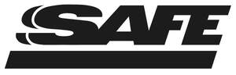

Trade Mark Journal No.2025/048 28 November 2025
UK00004268531 24 September 2025 (7,9,10,24,25,37)

International priority date claimed: 10 July 2025
(European Union Intellectual Property Office (EUIPO))
(019215765)
- Class 7
- Winches [machines]; mechanical winches; safety manual hoists; cranes.
- Class 9
- Harnesses for body support when lifting loads; safety footwear; safety footwear for protection against accidents or injuries; fire resistant gloves; disposable gloves for laboratory use; gloves for protection against accidents; gloves for industrial use for protection against accidents; gloves for protection against X-rays for industrial use; safety gloves for protection against accidents or injuries; gloves for protection against accidents, irradiation and fire; disposable plastic gloves for laboratory use; disposable latex gloves for laboratory use; protective work clothing [for protection against accidents or injuries]; gas masks; protective masks; masks for welders; respiratory masks; dust masks; filters for respiratory masks; anti-pollution masks for respiratory protection; face shields for protection against accidents, irradiation and fire; noise cancelling headphones; protective visors; anti-glare visors; visors for helmets; dustproof glasses; protective glasses; safety glasses for protecting eyes; protective helmets; protective face shields for protective helmets; safety helmets; headgear acting as protective helmets; protective suits [against accidents and injuries]; clothes for protection against chemicals; clothing for protection against accidents; protective boots for industrial use; clothing for protection against fire; safety harness; safety caps; protective and safety equipment; reflective safety vests; safety life jackets; safety restraint lanyards for fall protection; high-visibility safety clothing; life-saving, safety, protection and signalling devices; personal protective equipment against accidents; devices for protection against X-rays not for medical use; current overload protectors; power surge protectors; fire protection devices; personal reflecting discs for preventing road accidents; clothing reflecting discs for preventing road accidents; skull guards for protection against accidents; headgear items for protection against accidents; helmets for sports activities for protection against accidents; protective shoes [against accidents or injuries]; nets for protection against accidents; thermal suits for protection against accidents or injuries; insulated clothing for protection against accidents or injuries; face guards for protection against accidents or injuries; electrically cooled clothing for protection against accidents or injuries; armbands [luminous] for protection against accidents or injuries; apparatuses for fall protection; life-saving apparatuses and systems; line throwers for safety and rescue purposes; lifeboats; radio-controlled lifebuoys; rescue flares, non-explosive and non-pyrotechnic; life rafts; safety tarpaulins; life-saving devices; life jackets; lifebuoys; life belts; safety nets; rescue ladders [transportable]; smoke hoods [life-saving devices]; evacuation slides [life-saving devices]; safety clothing; bulletproof clothing; floating clothing items; fireproof clothing items; safety leather clothing; thermal protective aids [clothing] for protection against accidents or injuries; abdomen protectors for preventing personal damages [other than parts of sports clothing or for use in specific sports activities].
- Class 10
- Surgical gloves; gloves for hospitals; gloves for medical use; protective gloves for dental personnel; protective gloves for medical personnel; special clothing for operating rooms; surgical scrubs; medical scrubs; masks for medical use; eye masks for surgical use; face masks for medical use with antibacterial properties; face masks for surgical use for protection against toxic substances; high-filtration masks for surgical use; protective face masks for dental use; sanitary masks for dust protection for medical use; hearing protection devices which are not able to reproduce or transmit sound; ear plugs; noise protection devices in the form of deformable ear plugs; ear protective pads; ear plugs for protection against noise; hair protective caps for wear by medical personnel; surgical caps; hearing protectors; ear inserts for medical use; protective visors for medical use; transparent visors for medical personnel; protective shields for protection against X-rays during exposure [medical use]; patient safety belts; devices for protection against X-rays for medical use; clothing items, headgear items and footwear, braces and supports, for medical use; clothing items, headgear items and footwear for medical personnel and patients.
- Class 24
- Fabrics; fireproof fabrics; non-woven fabrics; rubberized fabrics; industrial fabrics; waterproof fabrics; reinforced fabrics [of textile materials]; ballistic resistant fabrics; fabrics used for orthotic devices; fabrics with protective properties against electromagnetic rays; fabrics for manufacturing clothing items for use in clean rooms; polymer-coated fabrics; filtering fabrics.
- Class 25
- Footwear; leisure shoes; gloves, including those made of leather, hide or fur; gloves with conductive-fiber fingertips that may be worn while using handheld touch screen electronic devices; work clothes; coveralls; work shoes; work boots; smocks; earmuffs; suits [clothing].
- Class 37
- Maintenance and repair of security systems; information services relating to the maintenance of security systems; maintenance and repair of security devices; services for the installation, maintenance and servicing of environmental and worker safety systems.
SAFE S.R.L.
Representative: N. J. Akers & Co